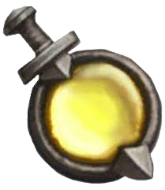

Maximus, Tenèbre Irelament
Une fois par tour et par monstre, lorsqu'un monstre allié est détruit durant votre tour. Vous pouvez le reinvqué sur le terrain, si le monstre devait revenir par son propre effet, conserver le et activer d'abord l'effet de Maximus, Meneur Irelament.
0
4

Maximus, Profanateur Irelament
Fléau
Une fois par tour et par monstre, lorsqu'un monstre allié est détruit durant votre tour, réinvoquez le sur votre terrain, si le monstre devait revenir par son propre effet, conserver le et activer d'abord
l'effet de Maximus, Pronateur Irelament. Lorsqu'une créature allié est invoqué, octroyez le +1/0.
1
6
Vindicateur Irelament
Garde
Lorsque ce monstre doit être détruit, vous pouvez détruire un autre monstre allié. Cet effet ne peut être utilisé qu'une fois par tour.
Si cet effet est utilisé, réduisez ses PV de 1.
3
4
Liche Irelament
Vif
Lorsque cette carte est invoqué, vous pouvez invoquer un monstre depuis votre cimetierre. Cet effet ne peut être utiliser que durant votre tour.
2
2
Archer Squelette

Lorsque ce monstre attaque, il inflige d'abord ses dégâts avant de recevoir des dommages. Lorsqu'elle est invoqué,infligez 1 dégats à un adversaire.
2
1
Guerrier Squelette
Lorsque ce monstre est détruit au combat, réinvoquez le. Cet effet ne peut être réutilisez qu'une fois après la fin du tour de votre adversaire et uniquement au moment de sa déstruction.
2
1